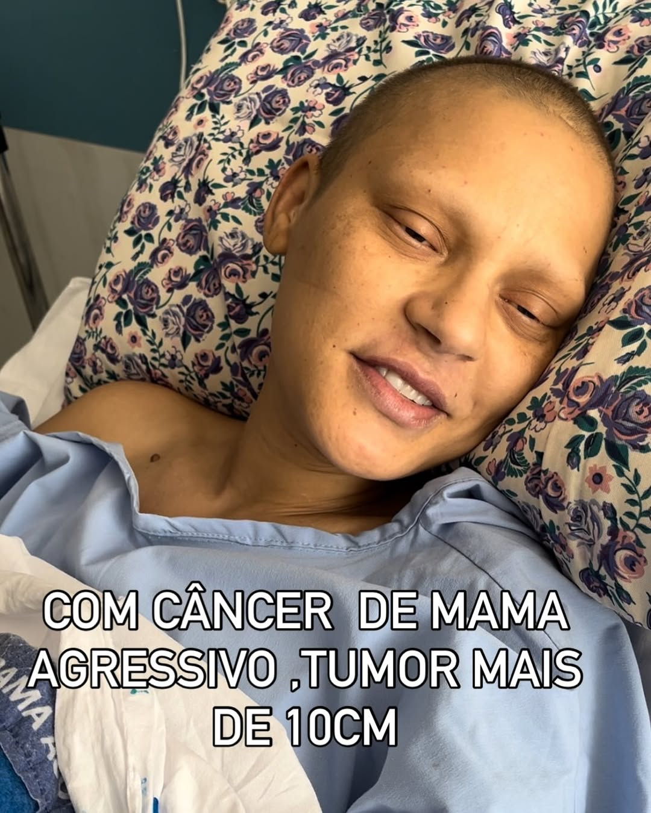

üíî Ajude Paula Dantas,uma Mãe SOLO que luta contra o câncer de mama! üíñ.
 117 corações recebidos ❤️
117 corações recebidos ❤️
Mãe SOLO Paula Dantas, a Carequinha, a continuar sua luta contra o câncer de mama! üíñ
Paula Dantas, a Carequinha, é uma mãe solo guerreira que está enfrentando a batalha mais difícil de sua vida. Diagnosticada com câncer de mama, ela se viu forçada a lutar não apenas contra a doença, mas também contra uma dura realidade: os custos do tratamento são exorbitantes e, sem poder trabalhar devido à doença, Paula depende exclusivamente de sua força de vontade e do apoio de todos nós..
"üåü Ela não está sozinha, mas precisa de n√≥s mais do que nunca
Além de enfrentar a dor física e emocional do câncer, Paula carrega a responsabilidade de ser a única responsável pelo sustento de seu filho.
Sua realidade é ainda mais difícil, pois sua família também vive em dificuldades financeiras e não tem condições de oferecer o apoio necessário. Sem conseguir trabalhar e com os tratamentos sendo extremamente caros, Paula está desesperada para conseguir dinheiro para garantir não só o tratamento, mas também o alimento para seu filho e um futuro minimamente digno para eles dois.
O apelido "Carequinha" foi dado devido à perda de seus cabelos durante as sessões de quimioterapia, mas é também um símbolo da força imensa que ela carrega, enfrentando tudo com uma coragem que inspira milhares de pessoas ao redor do Brasil.
Mesmo em meio à sua luta, Paula sempre teve um papel importante de apoio emocional para outras mulheres em tratamento, sempre lembrando que “uma palavra ‘eu estou com você’ vale mais que um abraço.”
"üíîAgora, Paula precisa de nossa ajuda urgente.
Ela não tem muito tempo.
Cada dia de tratamento é uma batalha, e o custo dos medicamentos e consultas tem sido um obstáculo insuportável.
Sem conseguir trabalhar, e sem o apoio financeiro de sua família, Paula tem poucas opções para garantir que seu filho tenha o que comer e um futuro seguro, caso ela não consiga vencer essa luta. A realidade é cruel, mas juntos podemos mudar essa história.
" üèöÔ∏è DESPEJADAS E SEM CASA"
No mês passado Paula Dantas, a Carequinha, está em uma situação desesperadora. Além de enfrentar a luta contra o câncer de mama, Paula corre o risco de ser despejada se não conseguir pagar o aluguel. Ela e seu filho estão prestes a perder o único lugar onde podem chamar de lar, em meio a uma batalha pela sobrevivência. Sem poder trabalhar devido ao tratamento e sem o apoio financeiro necessário, Paula se vê diante da cruel realidade de não conseguir arcar com os custos básicos de sua vida e do seu filho. O tempo é curto, e a situação só piora.
üìå Agora, ela precisa da nossa ajuda mais do que nunca..
Sem casa, sem recursos e sem o apoio financeiro de sua família, Paula precisa urgentemente de nossa ajuda. Ela tem poucos dias para garantir o tratamento necessário e, ao mesmo tempo, lutar para garantir que seu filho não fique desamparado. O custo do tratamento, somado à luta para garantir um lugar para morar e o básico para a sobrevivência, está tornando sua jornada ainda mais difícil.
O apelido "Carequinha" surgiu quando Paula perdeu seus cabelos devido à quimioterapia, mas representa muito mais do que uma simples fase de sua vida. É um símbolo de força, resistência e da incrível coragem de uma mãe que, mesmo diante de tantas adversidades, continua lutando para proteger seu filho e enfrentar os desafios do dia a dia.
Agora, ela precisa de nós mais do que nunca.
O tempo é curto, e Paula não pode esperar. Ela precisa de ajuda financeira para cobrir os custos dos tratamentos e, acima de tudo, para garantir que seu filho tenha o que comer e um teto sobre a cabeça enquanto ela continua sua luta. A realidade de não ter uma casa, e de precisar de cuidados médicos urgentes, é uma situação que muitas vezes não conseguimos imaginar, mas é exatamente o que Paula está vivendo.
üìñ "Tudo o que fizerem a algum dos meus pequeninos irmãos, a mim o fizeram." ‚Äì Mateus 25:40
CADA DIA QUE PASSA, PAULA DANTAS FICA MAIS TEMPO SEM PODER SORRIR!
Esses custos são altos e, mesmo com todo o amor do mundo, a família precisa de ajuda urgente para garantir a Carequinha uma vida com mais dignidade, conforto e qualidade de vida.
üôå Paula Dantas não precisa de piedade. Ela precisa de um milagre.
E talvez o milagre seja você.
üôè UM SINAL DE ESPERAN√áA
Naquela noite, ajoelhada no chão frio, ela pediu um sinal a Deus. Fechou os olhos e viu um Sinal de Deus, que ele iria tocar no coração das pessoas certas para ajudar sem medo e com sorriso no rosto, segurando a mão do filho e uma senhora vestida de branco.

É a mesma tecnologia usada por cirurgiões pra operar à distância, adaptada para devolver a independência a Paula Dantas.
Gusttavo Limma e outro empressario estão nessa causa tambem e DOBRARAM cada doação que for feita a Paula Dantas, isso vai ajudar DEMAIS e agora mais do que nunca precisaremos da sua ajuda!!!
Se você está lendo isso agora, eu te peço com o coração aberto: nos ajude. Assista nosso vídeo. Veja com seus próprios olhos quem é o Paula Dantas, quem somos nós. E se puder doar qualquer valor, saiba que estará ajudando dois irmãos a continuar lutando juntos — com dignidade, com carinho, com esperança. Você pode ser a diferença entre a dor e o alívio. Entre o desespero e a esperança.
Você receberá:
● Atualizações semanais da nossa jornada
● Vídeo do primeiro abraço dele com a prótese
● Seu nome na nossa lista de anjos (se desejar)
Compartilhe nossa história. Cada compartilhamento é uma nova chance de devolver a infância a minha filha
Que Deus abençoe você e a sua família.
Att: Mãe da Paula Dantas.